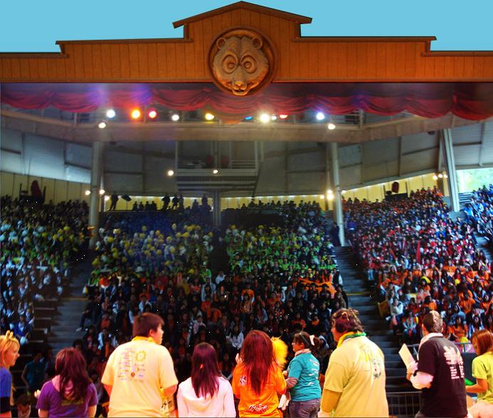
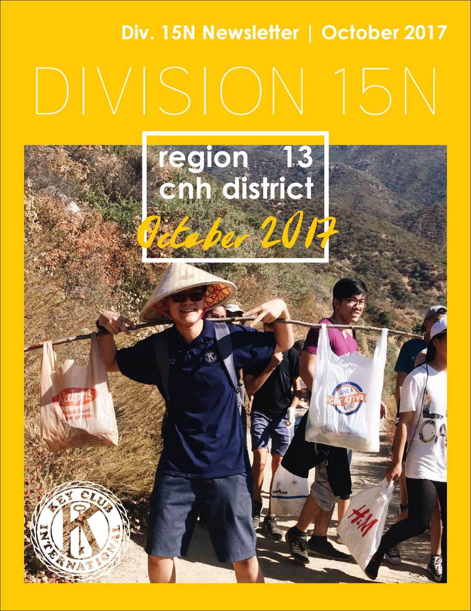
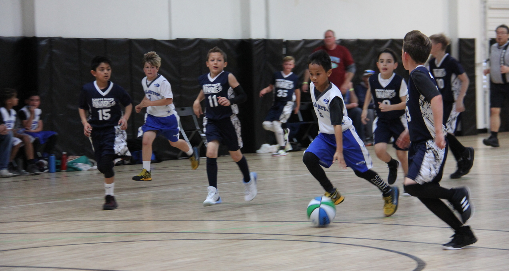
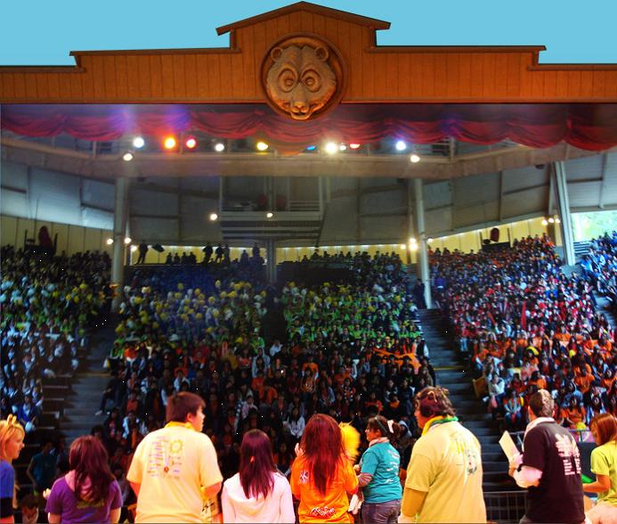
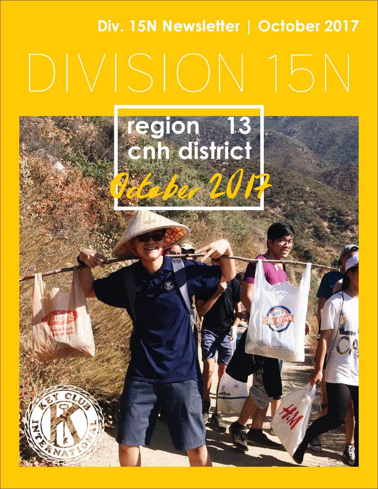
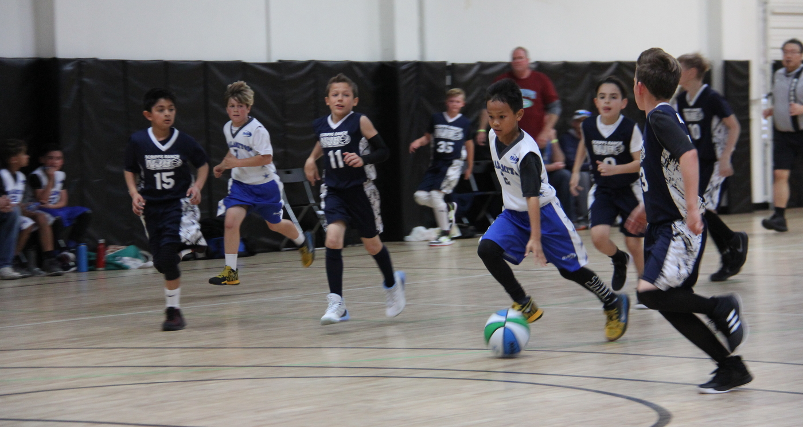

Nathaniel Cardenas
Currently a freshman majoring in Pre-business at the University of California Riverside. While I my work experience is very little, I believe my volunteering experiences and opportunities I have taken for many years have given me the exposure I needed. So far I’ve only worked one job as of this time. That job was a tutoring position at a Kumon branch located in Chino Hills. Within my workplace, I taught mainly English and Math but am also flexible to help children in other subjects if needed. Throughout my work experience as a tutor at Kumon, I have learned many soft skills and others. From adjusting my schedule to fit within the hours I am called in, creating effective learning plans as well as effective communication skills, my work experience at Kumon has exposed and thought me many things about the work force. I believe, although little, the knowledge I have gained in Kumon will help me become a more effective employee as well as co-worker in future jobs and career I decide to set foot on.
Volunteering wise, throughout high school, I have accumulated over 300 hours of community service. A third of those hours came from a medical volunteering opportunity. This alone helped me experience the long working conditions of 9 to 5 workers, which I believed helped me understand workplaces even further. In addition, being put in the front lines of hospitals, I was also put into situations where I had to organize many different documents containing thousands of names, medicine and etc. As a result, I am very proficient in organization as well as file management which could greatly benefit companies in need of a planner or organizer. Lastly, this volunteering experience has mainly helped my develop my communicative abilities even further. Talking with patients, doctors and fellow volunteer members, I was able to expand my vocabulary and became a much better speaker that can understand my peers. Furthermore, because of my developed speaking ability, I am able to effectively convey my ideas and wants to my peers which is very important within the business field when planning for big projects and etc.
The rest of my volunteering hours came within the form of different clubs and small organizational events that I attended. The most frequented club I volunteered for was Key Club. Key Club is a nationwide organization that includes hundreds of schools across the United States with its goal to help improve communities through volunteering, fundraising and other means of charitable work. As a member, my efforts has earned me Key Club member of the month in my district for the month of June in 2018. While the club seems like a regular high school club, because of its sheer size and the need to communicate with varying districts, I believe it has helped me develop many social skills. My experience from this club has helped me become much more open and friendly to others which has helped me build connections and friendships across the country through key club. Just by the fact I am able to create these connections, I believe it will benefit me in becoming proficient at creating business and work partners in the future.
Work Experiences
Tutor
• Created effective learning plans for students
• Effective communication with students
• Experienced in file management
Key Club Member
• Key Club member of the month
• Accumulated over 200 volunteering hours
Youth Basketball Coach
• Orchestrated dozens of practices to help children in basketball
• Met and exceeded parent expectations
• Promoted a healthy lifestyle through basketball
• Coached 3 teams within the span of a year
Certifications and Education
University of California Riverside
California Department of Real Estate
Skills and Experiences




 
